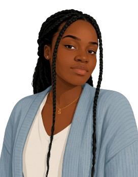

Mon parcours
De mes débuts dans le développement web à la gestion de projets digitaux, découvrez les étapes qui ont construit mon parcours.
Découvrez mon parcours, mes compétences et ma passion pour la création digitale.
Je suis une développeuse passionnée par la création de sites web modernes et fonctionnels.
une expérience dans divers projets, je m'efforce de créer des expériences utilisateur exceptionnelles
et de résoudre des problèmes complexes grâce à la technologie.

Mon parcours, mes compétences et mes inspirations sont au cœur de ma façon de créer.
De mes débuts dans le développement web à la gestion de projets digitaux, découvrez les étapes qui ont construit mon parcours.
Développement, design et gestion de projet : découvrez les outils et technologies que j'utilise pour donner vie à mes idées.
Voyage, créativité, design et découverte : découvrez ce qui nourrit mon imagination au quotidien.
Les choses qui nourrissent ma créativité et influencent ma manière de créer.
Découvrir de nouveaux endroits, cultures et paysages.
Transformer une idée en quelque chose de visuel et concret.
Les couleurs, les formes et les interfaces qui rendent une expérience unique.
Les petits moments du quotidien qui alimentent mon univers créatif.
Suivez-moi sur les réseaux.
VoirDécouvre une sélection de mes réalisations en design, branding et développement. Chaque projet reflète mon approche créative et ma manière de résoudre des problématiques concrètes.
Voir mes projets